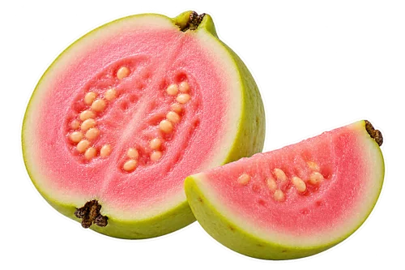
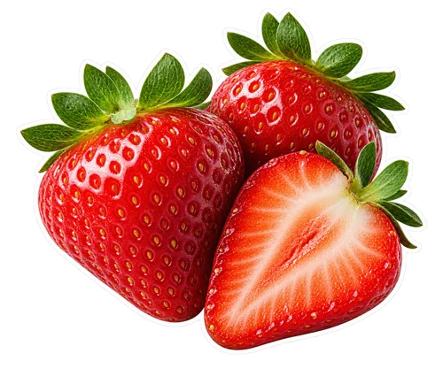

What you will need
Yield: 2 small glasses (about 2 cups). Final volume changes with fruit, straining, and liquid adjustments.

½ cup unsweetened seedless guava pulp (about 120 g)
1 cup hulled strawberries (about 140 g), fresh or frozen- ½ cup plain yogurt (about 120 g)
- ½ cup cold water (120 ml), plus more as needed
- Optional: 1 teaspoon honey or maple syrup, to taste
How to make it
Measure unsweetened seedless guava pulp. If using a frozen product, follow its thawing and handling directions so you can measure a manageable portion.
Wash fresh strawberries under running water and remove their leafy tops. Measure the prepared berries. For frozen strawberries, follow the package and blender instructions.
Add water and yogurt to the blender first, then guava pulp and strawberries. Blend until smooth, stopping the machine before scraping down the sides if necessary.
Taste before adding optional sweetener. Add water a tablespoon at a time if the mixture is thicker than you want, and blend briefly after each small adjustment.
Pour into two small glasses and serve promptly. The color can be pale pink or deeper rose depending on the guava pulp and the berries.
What's in this drink
- Guava: A 100 g amount of reference guava is recorded with 228 mg vitamin C and 0.23 mg copper. USDA: Guavas, common, raw.
- Strawberries: A 100 g amount of reference strawberries is recorded with 58.8 mg vitamin C and 0.386 mg manganese. USDA: Strawberries, raw.
- Plain dairy yogurt: A 100 g amount of reference plain dairy yogurt is recorded with 0.37 mcg vitamin B12 and 0.142 mg riboflavin (B2). USDA: Yogurt, plain, whole milk.
Nutrient figures are per 100 g of the USDA reference ingredient, not per serving.
The yogurt entry for guava strawberry smoothie describes whole-milk dairy yogurt, not a plant-based alternative. The guava record describes raw fruit; seedless commercial pulp can have a different composition.
Storage
Cover and refrigerate leftovers promptly. Follow the storage directions on opened packaged ingredients. FoodSafety.gov recommends refrigerating perishable food within two hours, or one hour above 90°F, and keeping the refrigerator at 40°F or below.
Short FAQ
Can I use bottled guava nectar?
Nectar is not the measured pulp ingredient. It changes both liquid and sweetness, so use a smaller trial and reduce the added water if experimenting rather than treating it as a one-for-one swap.
Does this recipe need banana?
No. The measured recipe uses guava, strawberries, yogurt, and water. It is written to keep those fruit flavors clear.
Why is my smoothie a different shade of pink?
Guava variety, berries, yogurt, and dilution all affect appearance.